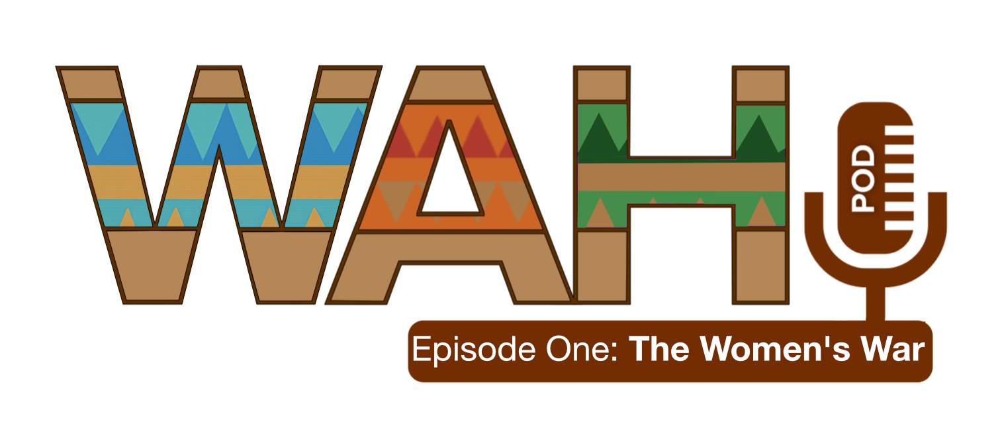

00:00 Speaker 1: You’re listening to West African History Pod, where the past speaks, and the story lives on.
00:15 Speaker 2: As historians, our work always begins with questions. We sift through evidence, debate meaning, and shape what we find into stories we can share. The story we’re exploring today is just one thread in West Africa’s rich historical tapestry—reminding us that history is never just the past. It’s alive, shaping who we are today. Let us tell you a story. A story from West Africa’s past that still echoes in our present. I am Nwando Achebe, your host, and with me today are
01:01 Speaker 1: Henry Fagan and
01:02 Speaker 3: Emmanuel Ankomahene.
01:04 Speaker 2: Together, we’re bringing back the Story in History.
01:11 Speaker 1: This is Episode 1, The Women’s War. Content advisory. This episode includes discussions of colonial violence, state repression, and historical trauma. It also contains sound effects, including gunfire. Listener discretion is advised.
01:44 Speaker 3: In 1929, what is now Nigeria was under British imperial rule. Amid colonization, British laws and cultural judgements were introduced to the region. These subjected local people to outside norms and systems that did not acknowledge the existing cultures, identities, and ways of living they had developed.
02:09 Speaker 2: Now imagine this: Night has fallen. The ilo—the village square—is silent except for the sound of crickets. Then it happens—a cry of grievance splits the darkness, urgent, unmistakable. Every woman knows what it means: a sister is in trouble. Women leave their compounds and converge on the square. Palm fronds—the symbol of the war to come—pass from woman to woman, spreading the summons through the village like wildfire. They tie ferns around their heads, smear their faces with ash, and grip their pestles like weapons. The square fills until it throbs with voices, movement, and the beat of feet. Then they march—with warlike precision—to the offender’s compound, singing mocking songs that shame and accuse. They surround the house, sometimes tearing it apart, thatching and all, sometimes plastering the walls with mud. And then they pull the offending man out, encircle him, lift up their wrappers to expose their nakedness, and one by one they sit on him—planting their bare buttocks on every part of his exposed body until he is completely humiliated and promises to make things right. They call it sitting on a man—or making war on a man. And in late 1929, Igbo and Ibibio women would take this sanction—this centuries-old act of justice—and transform it into something the British had never seen before: a full-scale war. The Aba Women’s War.
04:17 Speaker 1: Today’s journey takes us to southeastern Nigeria, where we follow tens of thousands of women who shut down markets, blocked roads, confronted chiefs, and faced British bullets.
04:30 Speaker 2: But before we dive in, here’s the question we’ll be carrying with us: What happens when women transform protest into a full-scale war? Let’s see where the story takes us.
04:48 Speaker 3: To really understand the Women’s War, we first have to understand that Igbo women were never powerless. Precolonial Igbo society was organized under what we call a dual-sex political system. Men governed men’s affairs—women governed women’s.
05:08 Speaker 1: Women weren’t just “helpers” within this system. They had their own councils and their own decision-making power.
05:14 Speaker 2: Take the otu umuada—the daughters of the lineage. They were like the supreme court of the community. They could settle disputes, impose fines, even perform purification rituals to keep the gods from punishing the whole village.
05:30 Speaker 3: And they weren’t isolated. These women were networked across villages. If something happened in one place, word could travel quickly to others and women could mobilize in solidarity.
05:44 Speaker 2: That network was supercharged by the market system. Igbo markets were women’s spaces—held every four days—and governed by the omu, the market queen. She and her council set prices, regulated trade and punished cheats. And there was even the awo—the market policewoman—to enforce the rules.
06:11 Speaker 3: So, markets weren’t just for buying and selling; they were political hubs.
06:18 Speaker 1: When men, or even chiefs ignored warnings, women had tools they could draw on. They could boycott cooking, shut down markets—and if that didn’t work, they could escalate to the most serious sanction of all: sitting on a man, or making war on him.
06:34 Speaker 3: Which wasn’t just a figure of speech—it was a whole performance of justice.
06:39 Speaker 2: Women would gather, surround the offender’s compound, sing mocking songs, drag him out, and shame him until he promised to make things right. It was a way of keeping the community in balance.
06:54 Speaker 1: But then came colonialism.
06:57 Speaker 3: And that is where the trouble began. The British didn’t understand this system—or worse, they ignored it. They appointed warrant chiefs—often younger, ambitious men who had no traditional authority—and gave them the power to rule alone. To be clear, these warrant chiefs were instruments of British rule, not figures put forward by the community.
07:22 Speaker1: Not only were the established systems of authority disturbed, but women were, quite suddenly, shut out of decision-making entirely.
07:31 Speaker 2:These changes did not take place in a vacuum. What is now Nigeria had been integrated into a global economy. And in 1929, there was a great collapse: the Great Depression. The women in our story were not immune. Palm oil prices —the backbone of women’s economic power—fell from twelve shillings a tin to barely five. Import duties went up. New weighing and inspection systems were put in place that women believed cheated them.
08:07 Speaker 1: Our picture then is one of an economic crisis, of political exclusion, particularly of women, and growing anger and frustration.
08:16 Speaker 2:And then came the rumors that women themselves were about to be counted by the British and taxed.
08:24 Speaker 3:Which was the last straw.
08:27 Speaker 1:It's against this backdrop— the spiraling challenges and the growing sense of injustice—that the spark at Oloko lit the fuse of something far, far larger.
08:40 Speaker 1:Part 1: The Main Story Scene 1: The Spark at Oloko
08:49 Speaker 3:The spark came in late November 1929, in the small town of Oloko. While the fire of discontent had been smoldering for years, women were now at the forefront as it was coming to life.
09:03 Speaker 2: The harmattan wind has just begun to blow. The air is dry, full of red dust. The sun is already hot, even in the morning. A government agent named Emeruwa strides into the compound of a widow named Nwanyereuwa. He does not greet her. He is carrying an order from Warrant Chief Okogu:
09:29 Speaker 1 (as Emeruwa):“You must count all the people in your household. Your sons, your daughters. Even your goats and chickens.”
09:36 Speaker 3: Nwanyereuwa stares at him in disbelief. Her voice is sharp.
09:41 Speaker 2 (as Nwanyereuwa): “Was your mother counted?”
09:43 Speaker 1: It’s a powerful question. She was not just asking about his mother—she was challenging the whole legitimacy of the census.
09:51 Speaker 3: And she’s using motherhood as a moral shield to challenge the immorality of not just the census but British rule. If your own mother isn’t being counted, how dare you count me?
10:03 Speaker 2: The argument turns violent. Emeruwa grabs her by the throat. She grabs him back. It is a short, furious struggle—then she tears herself free. She runs—her wrapper loose, feet pounding the dusty path—straight to the market square. She bursts into the market. Women are already gathering to talk about rumors of taxation. She shouts her story: that she has been told to count her goats, her sheep, her people.
10:36 Speaker 3: The square explodes in anger. Women know what counting means. Counting is always the first step to taxing. And taxing was not about to happen without a fight. The women waste no time. Palm fronds—the summons to war—are passed from woman to woman, from compound to compound, from village to village.
10:59 Speaker 1: By the afternoon, women begin arriving in Oloko from all directions. Some carry pestles on their shoulders. Some tie green ferns around their heads. Others smear their faces with white chalk. By sunset, hundreds have gathered.
11:18 Speaker 1: Scene 2: The Night of Defiance
11:24 Speaker 1: Night falls, but no one goes home. The market square becomes something else entirely—a camp, a parliament, a place of resistance. Women light torches. Flames throw their faces into sharp relief. The smell of woodsmoke and palm wine fills the air. They begin to sing insult-songs.
11:46 Speaker 2: “Okogu, you eat the food of the people, But you do not speak for the people.”
11:52 Speaker 1:These songs don’t just express anger—they publicly strip a man of his honor.
11:57 Speaker 3: And everyone can hear them. These songs traveled. Even people in neighboring villages would know exactly who was being shamed.
12:07 Speaker 2: They stamp their feet in time to the music until the very ground shakes. The sound rolls out into the night, carrying news of the women’s gathering further and further. They pass calabashes of palm wine, drink deeply, and shout their grievances. Through the long night, the women turn fear into courage.
12:31 Speaker 1: The all-night vigil was both ritual and strategy. Word spread, and by dawn, women from adjoining villages had begun to arrive. A broader solidarity was being built.
12:43 Speaker 3:By that morning, it’s no longer just a meeting. It’s a movement—a movement initiated and led by women.
12:51 Speaker 2: As the sky lightens, you can feel the shift. Their voices are no longer just angry—they are resolute. By dawn, the decision is made: they will march.
13:09 Speaker 1: Scene 3: The March on Okogu’s Compound
13:16 Speaker 2: The first rays of dawn spread across Oloko. The women tie their wrappers tightly, ready for action. They grip their pestles like weapons. The market square empties as hundreds stream toward Warrant Chief Okogu’s compound. Their singing begins low, then swells until it echoes through the bush paths:“Okogu, you have sold us for money, You will answer today!”When they arrive, they surround his compound.
13:50 Speaker 1: Just imagine Okogu hearing that sound from inside his house—the chanting, the feet stamping.
13:57 Speaker 3: It must have been terrifying. This was a public trial, and he knew it.
14:02 Speaker 2: The women demand answers.“Who told you to count us? Who gave you the right?”There is silence; Okogu refuses to come out.
14:13 Speaker 1: The women push through the gates. They tear down fences, throw his belongings into the dirt, and seize anything of value. Some of them strike the walls with their pestles. Others chase his wives and servants from the compound. This is not mindless chaos. It’s justice, Igbo women’s style.
14:32 Speaker 3: And remember—Okogu wasn’t just any man. He was the government’s man. By humiliating him, they were humiliating colonial authority itself and British colonialism at large.
14:44 Speaker 1: And they did not stop there.
14:46 Speaker 2: The women leave the ruined compound and march toward the colonial headquarters at Bende.
14:58 Speaker 1: Scene 4: The Confrontation at Bende
15:06 Speaker 2: By the time they reach the district office, there are thousands of women. They surround the building, their singing now deafening. Inside, Acting District Officer Captain Hill watches in alarm. He later writes that the women were “like a pack of hounds with a fox.”
15:35 Speaker 1: It’s a revealing phrase—he saw them as a pack of hunters, coordinated, relentless. It’s safe to say it was view shaped by racialized ideas, and a prejudiced pro-colonial outlook. This should come as no surprise. After all, the British didn’t deem it necessary to consult the very women they were seeking to govern.
15:55 Speaker 2: For days, the women refuse to leave. They shout, they dance, they beat on the doors, they block the roads. Finally, Captain Hill comes outside. He throws them the cap of office belonging to Okogu, the very symbol of his authority. The women tear it to shreds.
16:17 Speaker 3: And this is a critical turning point. Instead of calming things down, this victory convinces the women that they can win.
16:26 Speaker 2: They leave Bende emboldened, ready to spread the protest.
16:37 Speaker 1: Scene 5: The Spreading Fire
16:44 Speaker 1: Word travels fast. Palm fronds are sent along footpaths as market squares buzz with news: in village after village, women are rising up. In Aba, they surround the courthouse, dismantle fences, and scatter court records into the wind. In Owerri, they confront chiefs, demanding that they resign. In Calabar, they shut down the markets. They refuse to sell palm oil until fair prices return. Everywhere they go, these women turn protest into ritual. Women sing insults, mock corrupt chiefs, and dance until dawn.
17:21 Speaker 3: Protest becomes a festival of resistance. And that’s what made it so dangerous to the colonial state. This wasn’t one riot—it was a coordinated uprising across an entire region.
17:34 Speaker 2: By mid-December, the protests have spread across three provinces. Tens of thousands of women are now involved.
17:50 Speaker 1: Scene 6: The Crackdown
17:56 Speaker 2:The colonial government panics. They send in police, then call for troops. In town after town, women refuse to disperse. Then, the order is given.The soldiers open fire on unarmed women. When the shooting stops, more than fifty women lie dead. Many more are wounded.
18:26 Speaker 1: Here we should pause and reflect for a moment. These were mothers, daughters, market women, and farmers—they were ordinary women who stood up for autonomy and for justice. They paid for it with their lives.
18:40 Speaker 3: And yet, their movement did not disappear. Their deaths became part of the story that traveled worldwide.
18:49 Speaker 2: And that’s where we turn next—to what this uprising meant, both then and now.
18:59 Speaker 2: You’re listening to West African History Podcast—where we bring back the Story in History.
19:07 Speaker 3: If you’re enjoying today’s story and want to go deeper explore the Journal of West African History, where scholars bring new research, voices, and perspectives to our understanding of the West African past.
19:22 Speaker 2: Now, back to our story—where we’ll explore what changed after the Women’s War.
19:35 Speaker 1: Part 2: What Changed
19:40 Speaker 2: So, let’s take stock. The story we've just told wasn’t a random outburst of anger—it was a carefully organized, disciplined, women-led movement rooted in centuries of tradition.
19:57 Speaker 1: To outsiders, perhaps to British officials, the Women’s War might have seemed chaotic. But such views are based on a misunderstanding of what took place. To Igbo women, nothing could be further from the truth. Their protestations drew the same ritual language of justice they had always drawn on—only now; it had been scaled up to confront an intrusive and oppressive colonial government.
20:22 Speaker 3: These women were incredibly strategic. They didn’t just burn things down for the sake of destruction. They targeted symbols of colonial authority—courts, records, offices—to show that the system had lost legitimacy.
20:37 Speaker 2: And we can’t forget the performative power of what they did. The songs, the dancing, the palm fronds, the baring of their bodies—these weren’t just emotional reactions. They were a kind of political theater, designed to shame and destabilize those in power.
21:01 Speaker 1: Sitting on a man—exposing one’s nakedness—was not just about humiliation. In Igbo thought, a mother’s nakedness could bring about a curse. It was the ultimate moral and spiritual sanction.
21:15 Speaker 3: And they were willing to invoke that curse collectively against chiefs, against warrant officers, even against the colonial state itself. That takes courage.
21:25 Speaker 2: It also put African women on the international map. The story of the Women’s War was covered by international newspapers. A multinational audience was reading about African women shutting down roads, marching by the thousands, and facing down soldiers.
21:46 Speaker 1: And it shocked the colonial administration. They had been governing as if women were politically irrelevant—and suddenly tens of thousands of women had forced them to the table.
21:56 Speaker 3: Their response tells you everything. They didn’t just suppress the revolt—they launched a massive intelligence-gathering project.
22:05 Speaker 2: They sent anthropologists like C.K. Meek, Sylvia Leith-Ross, Ida C. Ward, and Margaret Green into the field to “study” Igbo political systems. More than 200 intelligence reports were produced within a few years. The goal was to map women’s power so thoroughly that nothing like this could ever catch them off guard again.
22:33 Speaker 1: So, in a way, the Women’s War forced the British to engage with Igbo society on its own terms. They had made few attempts to do so before now, despite their claims that they governed the region for its own good.
22:47 Speaker 3: And that’s part of the paradox here. The women’s movement was crushed—people died—but it also changed colonial policy. It showed that women were a political force that could not be ignored.
23:03 Speaker 2: And that’s why we say this was not a “riot.” This was a war. The women themselves called it ogu umunwanyi—the women’s war. It was a war fought with songs, with bodies, with rituals, and yes, with direct action.
23:29 Speaker 1: Part 3—Why It Matters
23:34 Speaker 2: So, what did all of this change? In the immediate aftermath, the colonial government moved quickly to dismantle the very structures that had caused so much anger. The warrant chief system was abolished in many areas and replaced with what they called “massed benches”—a kind of collective court system.
23:57 Speaker 1: Which sounds good on paper, right? Collective decision-making instead of power concentrated in one man.
24:05 Speaker 3: But it is complicated. Those massed benches were still colonial creations. Women might have been consulted more, but they still didn’t get the same level of authority they had in the precolonial dual-sex system.
24:20 Speaker 2: And the British weren’t just reforming—they were also limiting. They explicitly banned sitting on a man and other forms of direct, communal justice. They were trying to make sure women would never be able to mobilize like this again.
24:37 Speaker 1: And that’s where the anthropologists came in.
24:40 Speaker 2: They came hand in hand with the colonial government. They were agents of imperialism, sent into the field to help gather the information the British needed to rule.
24:51 Speaker 2: And those reports weren’t neutral—they were surveillance tools. The government wanted to understand exactly how women organized, how power worked in the villages, so they could control it.
25:05 Speaker 1: So, there’s this tension. On the one hand, the Women’s War forced recognition—women were finally seen as political actors who could not be ignored. On the other hand, the very fact of their power made the state clamp down on them even harder.
25:20 Speaker 2:But I think the bigger legacy is what this tells us about African women. Too often, the stereotype is that women were just victims of colonialism, silent, passive. The Women’s War explodes that narrative.
25:39 Speaker 3: These were organizers, strategists, and warriors. They used every tool they had—song, dance, ritual, even their own bodies—to fight for justice.
25:51 Speaker 1: And they built a movement that was intersectional—before we even had the word. Market women, farmers, mothers, daughters—they came together across villages and lineages to defend their collective rights.
26:03 Speaker 2: And their story continues to resonate. Anytime we see women leading protests—whether it’s against police brutality, for climate justice, or for democracy—we can trace a line back to Oloko in 1929. These women showed what is possible when women act together.
26:26 Speaker 3: And that’s why we still tell this story. Because it reminds us that ordinary women changed the course of history.
26:36 Speaker 2: And that history isn’t just about what happened—it’s about what continues to shape who we are today.
26:51 Speaker 2: Before we come full circle, here’s one takeaway we want to sit with. In the end, the colonial state learned what it had refused to see—that women were not outside politics, but at its very center.
27:20 Speaker 2: And so, we’ve come full circle. Our story began with The Women’s War - a story of how women transformed protest into a full-scale war. It reminds us that history is never just the past. It’s alive, shaping who we are today.”
27:41 Speaker 1: You’ve been listening to West African History Pod—where we bring back the Story in History.
27:48 Speaker 3: If you enjoyed today’s episode, please subscribe, share, and join the conversation. We would love to hear from you. You can reach the West African History Pod at WestAfricanHistoryPod@msu.edu. That is West African History Pod, all one word, at M S U dot E D U. Today’s episode was created, written, and hosted by Nwando Achebe. Henry Fagan and Emmanuel Ankomahene are co-hosts. The West African History Pod is a collaboration of Michigan State’s Department of History, LEADR, and African Studies Center, with Marissa Knaak and Gillian Macdonald, of LEADR, leading production. This episode was originally produced by Mike Green, formally of the African Studies Center.
28:40 Speaker 2: The past is never past. Until next time—thank you for listening.